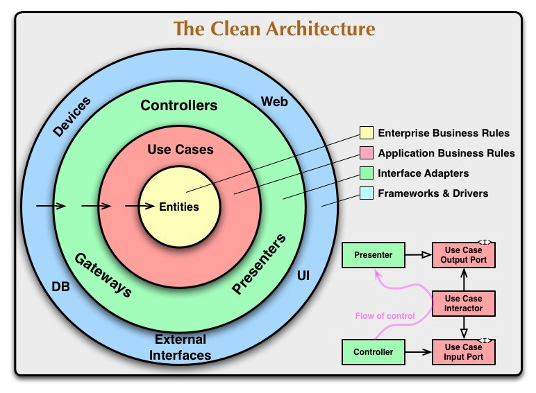

WebApplications con SpringBoot¶
Lo sviluppo di applicazioni Web non può presceindere dall’uso di uno dei numerosi framework disponibili (si veda ad esempio WebappFrameworks).
Per il nostro legame con Java, può essere opportuno, per ora, fare riferimento a Springio. Tuttavia, una adeguata alternativa potrebbe essere l’uso di framework basati su Node.js ed Express.
Sappiamo che l’uso di un framework aiuta a risolvere problemi ricorrenti in un dominio e impone precise regole per l’introduzione di componenti applicativi nel contesto dello schema architetturale che il framework utilizza per supportare le sue funzionalità.
Nel caso dei framework nel dominio delle applicazioni Web, troviamo un insieme di concetti e modi di operare comuni:
l’uso di un WebServer (spesso Apache Tomcat) che rimane nascosto al livello applicativo;
l’uso di una infrastruttura che abilita le comunicazioni Client-Server mediante il protocollo HTTP e gli schemi REST di interazione;
la possibilità di definire componenti applicativi ‘innestabili’ nel framework secondo precisi meccanismi. SpringBoot si basa principalmente sul meccanismo delle annotazioni Java;
il concetto di Controller come elemento-base per la gestione dei messaggi;
l’uso di tools che agevolano la creazione dinamica di pagine HTML a partire da template con ‘parametri’ che possono essere fissati dal Controller;
l’abilitazione all’uso delle WebSocket per interazioni asincrone con i Client
Lo schema di funzionamento può essere riassunto come segue:
un operatire umano usa un Browser per collegarsi via HTTP a una certa porta di un nodo remoto, usata come porta di ingresso dal WebServer
l’infrastruttura del framework effettua una prima gestione del messaggio in arrivo in modo da confezionare oggetti computazionali (richieste e/o risposte) da trasferire ad opportuni metodi del Controller per agevolare la stesura del codice di gestione da parte dell’Application Designer. Spesso la perte infrastrutturale è organizzata secondo una pipeline che permette all’Application Designer di introdurre parti di elaborazione a questo livello
i metodi del Controller realizzano la gestione dei messaggi in funzione dei i ‘verbi’ HTTP (GET,PUT,POST,DELETE) con cui sono stati inviati e prepara una pagina HTML di risposta, sfruttando opportuni template predefiniti di pagine. I parametri dei template vengono fissati utilizzando un Modello della pagina secondo un classico schema MVC.
il Controller restituisce la pagina alla parte infrastruttrale che l’aveva chiamato, la quale provvede a inviare la pagina al Client che aveva effettuato la richiesta HTTP;
se l’operatore umano è sostituito da una macchina si parla di Machine-To-Machine (M2M) interaction. I messaggi vengono girati a un Controller specializato per inviare ripsoste in forma di dati, molto spesso in formato XML o JSon.
Architettura del WebServer¶
Dal punto di vista architetturale, l’organizzazione interna del codice del WebServer dovrà essere ispirata ai principi della CleanArchitecture.

|
 |
In accordo al principio della inversione delle dipendenze:
I componenti di alto livello non devono dipendere da componenti di livello più basso.
Con queste premesse, il compito che ci attende è, in generale, quello di realizzare la parte Presenter, in modo da continuare a tenere separati i casi d’uso dall’interfaccia utente.
Come ogni applicazione SpringBoot, gli elementi salienti sono:
Un WebServer Controller che si occupa della Human-Interaction (che di norma denomineremo HIController) che presenta all’end user una pagina HTML.
Una pagina HTML che include campi il cui valore può essere definito attraverso un oggetto
org.springframework.ui.Modelche viene trasferito aHIControllerdalla infrastruttura Spring e gestito mediante la Java template engineTheamleaf.Un file JavaScript che include funzioni utili per la gestione della pagina lato client.
Un file per l’uso delle WebSocket che implementa l’interfaccia
WebSocketConfigurerdi org.springframework.web.socket.config.annotation.- l’suo delle WebSocket, per l’aggiornamento automatico della pagina attraverso
la introduzione di un observer. In questo caso, l’uso di CoAP o MQTT può rendere il compito più agevole rispetto a TCP, in quanto nella versione TCP abiamo introdotto solo observer locali. Con CoAP o MQTT invece non è complicato introdurre presso il WebServer Spring un observer che riceve dati emessi dal Raspberry.
REST¶
REST (Representational State Transfer) è un’architettura orientata alle risorse (ROA) , dove ogni componente di un sistema o di un’applicazione è chiamato risorsa .
Una risorsa è identificata in modo esplicito e può essere indirizzata individualmente.
L’utilizzo dello stesso identico schema di denominazione standard di tutte le altre risorse Web consente di integrare senza problemi le cose e le loro proprietà nel Web perché le loro funzioni, dati o sensori possono essere collegati, condivisi, inseriti nei segnalibri e utilizzati come qualsiasi altra cosa sul Web .
Ricordiamo i concetti di base:
Le interazioni tra i componenti si basano sul modello richiesta-risposta, in cui un client invia una richiesta a un server e riceve una risposta
L’accoppiamento libero tra i componenti può essere ottenuto utilizzando un’interfaccia uniforme che tutti i componenti del sistema rispettano.
Le interfacce uniformi semplificano la progettazione di un sistema a più livelli, il che significa che diversi componenti intermedi possono nascondere ciò che c’è dietro.
La memorizzazione nella cache (Chaching) è un elemento chiave nelle prestazioni.
Una risorsa è qualsiasi concetto o pezzo di dati in un’applicazione che deve essere referenziato o utilizzato. Ogni risorsa deve avere un identificatore univoco e dovrebbe essere indirizzabile utilizzando un meccanismo di riferimento univoco. Sul web, questo viene fatto assegnando a ogni risorsa un unico
URL.
{kind=link}
Un localizzatore di risorse uniforme (URL) è un tipo di Uniform Resource Identifier (URI) che identifica una risorsa tramite una rappresentazione del suo meccanismo di accesso primario. Sul Web, un URL è un URI che inizia con lo schema http://
URI¶
Un URI (schema standard definito in RFC 3986.4 ) è una sequenza di caratteri che identifica inequivocabilmente una risorsa astratta o fisica.
<schema> ":"[ "?" query ] [ frammento "#" ]
HATEOAS¶
HATEOAS (Hypermedia as the Engine of Application State)
Servers shouldn’t keep track of each client’s state because stateless applications are easier to scale.
Invece, lo stato dell’applicazione dovrebbe essere indirizzabile tramite il proprio URL e ogni risorsa dovrebbe contenere collegamenti e informazioni su quali operazioni sono possibili in ogni stato e su come navigare tra gli stati.
Primi passi con SpringBoot¶
Connettersi a https://start.spring.io/
Selezionare Gradle Project, Java, Group=unibo, Artifact=webForActors (Options:Packaging=Jar, Java=8) e le seguenti Dipendenze:
Spring Web: crea applicazioni Web, inclusi RESTful, utilizzando Spring MVC. Utilizza Apache Tomcat come contenitore incorporato predefinito.
Thymeleaf: un moderno motore di template Java lato server per ambienti web e standalone. Consente di visualizzare correttamente l’HTML nei browser e come prototipi statici.
Spring Boot DevTools: Fornisce riavvii rapidi delle applicazioni, LiveReload e configurazioni per un’esperienza di sviluppo avanzata. Accelera questo ciclo di aggiornamento (codifica di una modifica, riavvio dell’applicazione e aggiornamento del browser per visualizzare la modifica).
Attivare Generate
Decomprimiere il file generato webForActors.zip in una directory vuota (es . C:/xxx ) ed esegure
gradlew buildAprire un IDE e aprire o importare il progetto webForActors. Guardare la classe generata
unibo.webForActorsApplication.javapackage it.unibo.webspring.demo import org.springframework.boot.autoconfigure.SpringBootApplication import org.springframework.boot.runApplication @SpringBootApplication public class WebForActorsApplication { public static void main(String[] args) { SpringApplication.run(WebForActorsApplication.class, args); }
Eseguire l’applicazione e aprire un browser su
localhost:8080: compare la pagina che segue:

Crea il file
webForActors\src\main\resources\templates\welcome.htmlcon il seguente contenuto:<html xmlns:th="http://www.thymeleaf.org"> <head><title>Welcome</title></head> <body> <h1>Welcome (in templates)</h1> <p>Welcome to <b><span th:text="${arg}">Our Arg</span></b>.</p> </body> </html> </pre>
Inserire nel file
webForActors\src\main\resources\application.propertiesquanto segue:spring.application.name=WebForActors spring.banner.location=classpath:banner.txt server.port = 8085 human.logo = Gui for human-machine interaction machine.logo = Gui for machine-to-machine interaction
Inserire un file
banner.txt( si veda ) personalizzato nelladirectory resources
Un primo controller¶
Creiamo un file it.unibo.webspring.demo.HIControllerDemo con il seguente contenuto:
package it.unibo.webspring.demo;
import ...
@Controller
public class HIControllerDemo {
@Value("${spring.application.name}")
String appName;
@GetMapping("/")
public String homePage(Model model) {
model.addAttribute("arg", appName);
return "welcome";
}
@ExceptionHandler
public ResponseEntity handle(Exception ex) {
HttpHeaders responseHeaders = new HttpHeaders();
return new ResponseEntity(
"BaseController ERROR " + ex.getMessage(),
responseHeaders, HttpStatus.CREATED);
}
}
Attiviamo di nuovo l’applicazione e un browser su localhost:8085. Vedremo comparire:
{kind=link}
Una WebConsole per il RobotCleaner¶
Ci poniniamo l’obiettivo di creare con Spring una WebApplication che mostri agli utenti una pagina HTML come quella di figura:

La business logic è nel prototipo RobotCleaner
Obiettivo della applicazione Spring è solo quello di offrire una GUI. Tutta la logica applicativa è già stata realizzata (e testata) e può essere resa disponibile mediante un file
jar.
Chi crea il componente applicativo?
Vi sono due modi principali:
Modo remoto: Il componente applicativo viene allocato su un nodo diverso da quello che ospita l’applicazione Spring
Modo locale: Il componente applicativo viene creato dalla applicazione Spring stessa
WORKTODO: discutere i pro/contro dei due modi
RobotCleanerGui.html¶
Inseriamo il file
RobotCleanerGui.htmlnella directory templates
Un controller per RobotCleaner Appl¶
Commentiamo l’annotazione
@ControllerinHIControllerDemoe inseriamo un nuovo controllerHIController.
package it.unibo.webspring.demo;
import ...
@Controller
public class HIController {
private static final String robotCmdId = "move";
private static String robotName = "cleaner";
public HIController(){
//createRobotCleaner();
}
@GetMapping("/")
public String homePage(Model model) {
model.addAttribute("arg", appName);
return "RobotCleanerGui";
}
//Dopo click sul pulsante connect
@PostMapping("/configure")
public String configure(Model viewmodel , @RequestParam String move, String addr ){
ConnQakBase connToRobot = ConnQakBase.create( ProtocolType.tcp );
conn = connToRobot.createConnection(addr, 8083);
Qak22Context.setActorAsRemote(robotName, "8083", "localhost", ProtocolType.tcp);
return mainPage;
}
//Dopo click sul pulsante start/stop/resume
@PostMapping("/robotmove")
public String doMove(Model viewmodel , @RequestParam String move ){
if( move.equals("t")){ //Start
Qak22Util.sendAMsg( SystemData.startSysCmd("hicontroller",robotName) );
}else{
try {
String msg = moveAril(move).toString();
conn.forward( msg );
} catch (Exception e) {... }
}
return mainPage;
}
@ExceptionHandler
public ResponseEntity handle(Exception ex) {
HttpHeaders responseHeaders = new HttpHeaders();
return new ResponseEntity(
"BaseController ERROR " + ex.getMessage(),
responseHeaders, HttpStatus.CREATED);
}
}